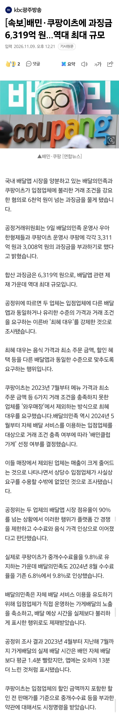
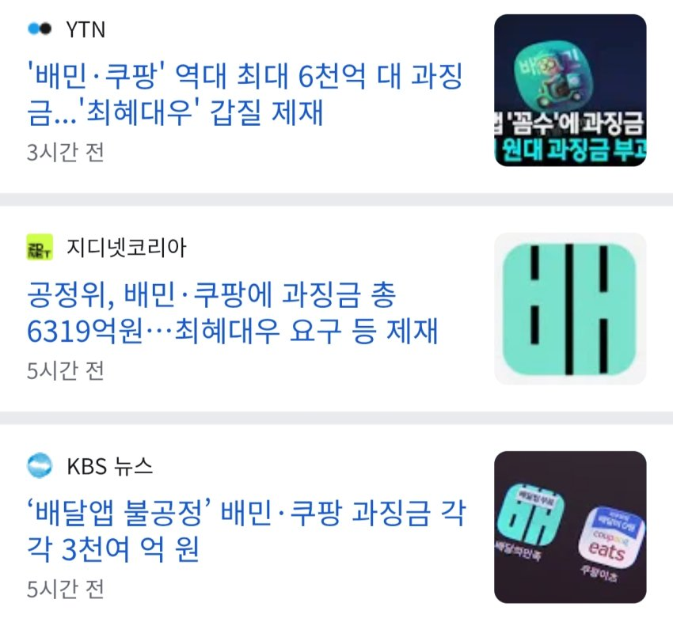
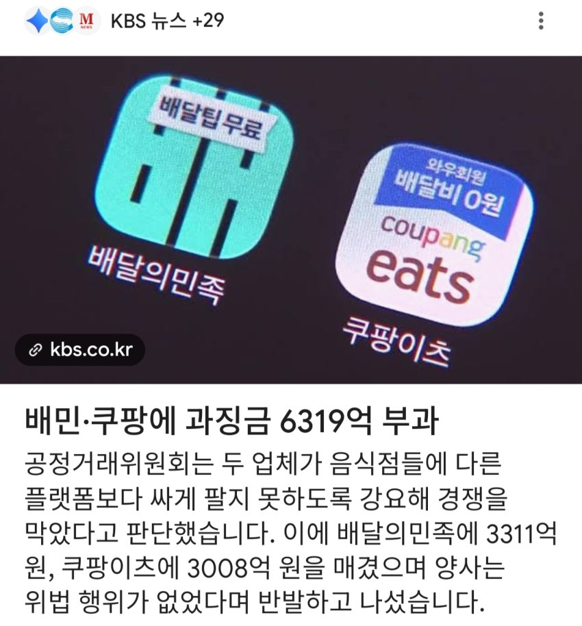
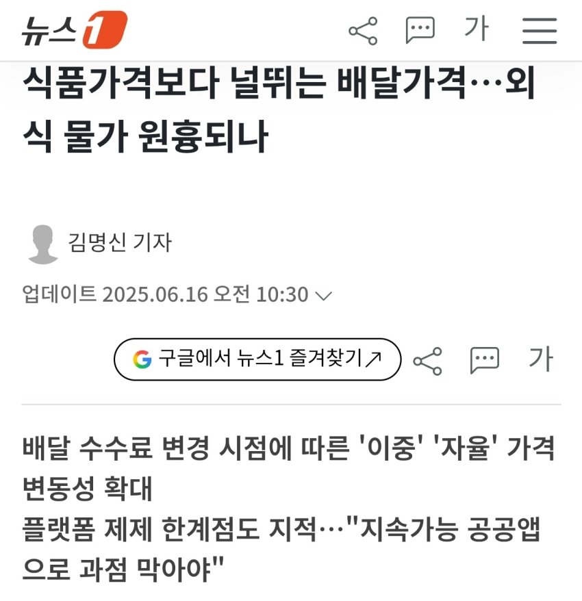
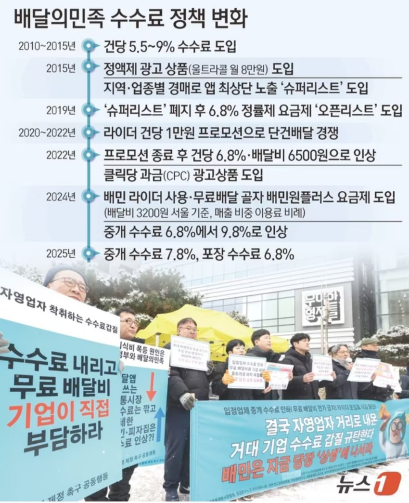
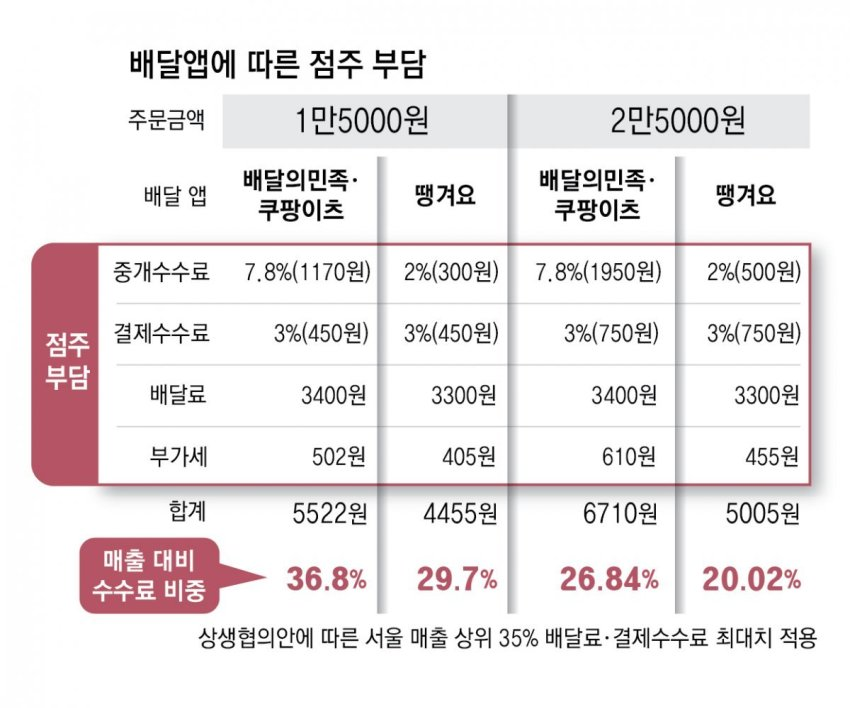
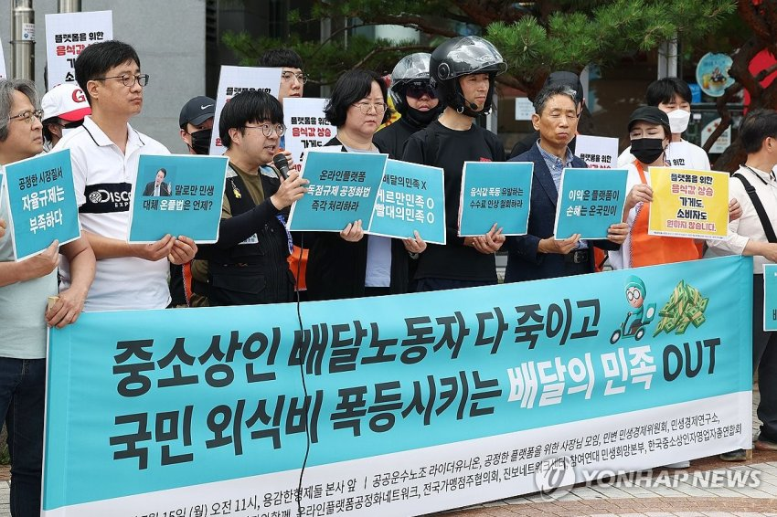
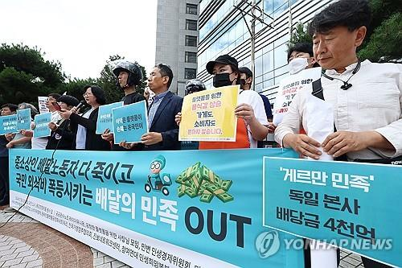
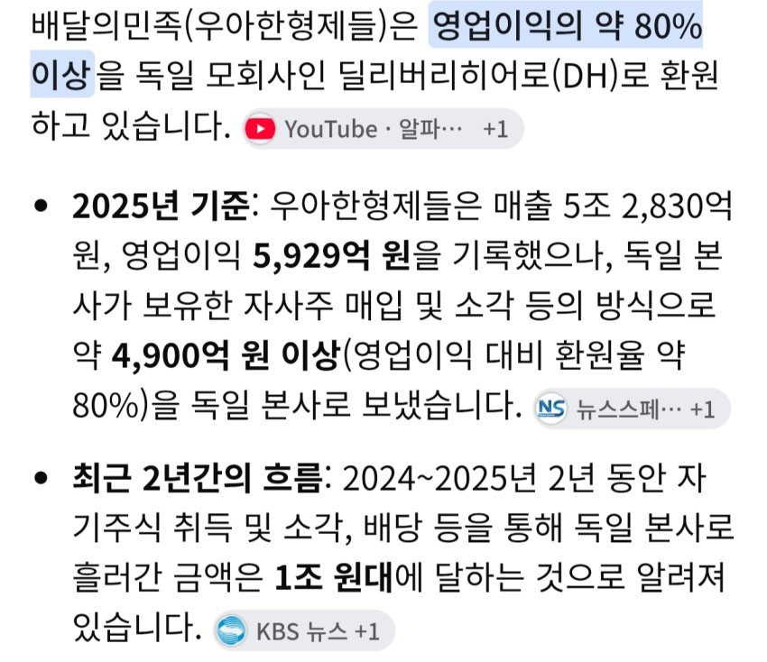
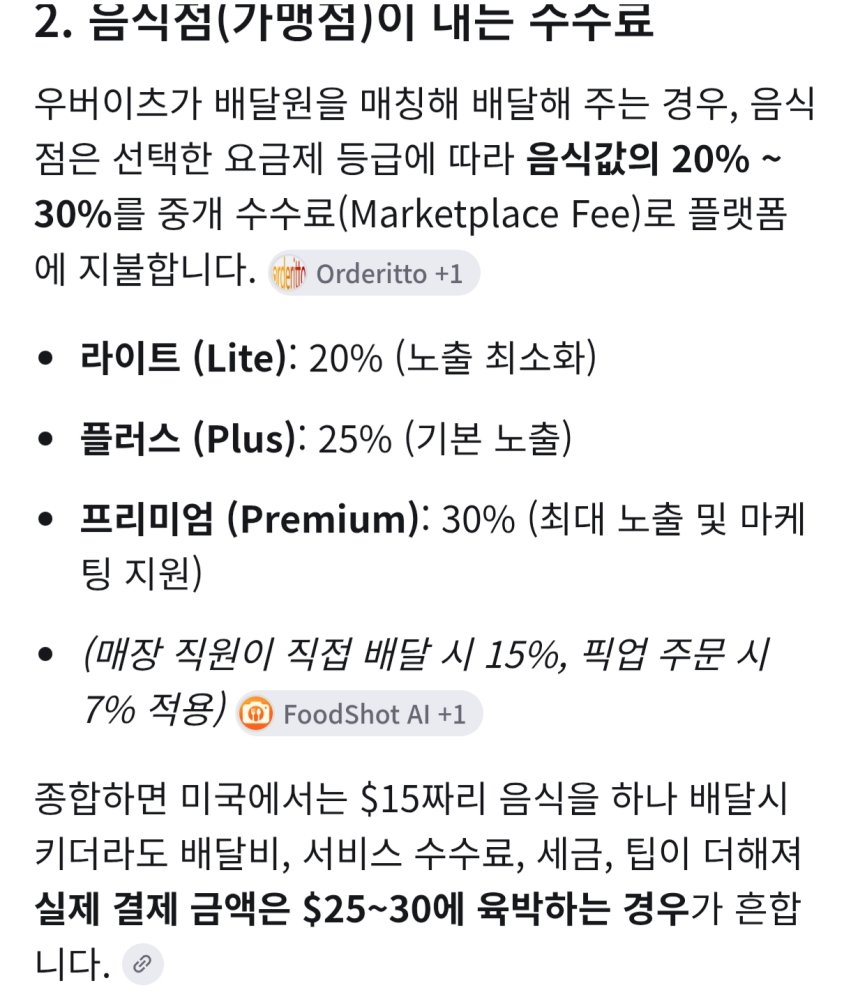

- 싱글벙글 공정위한테 6319억 과징금 폭탄맞았다는 배민·쿠팡이츠


재작년부터 논란이 많은 배달앱 갑질문제에 대한 조치 중 하나인 듯
외식물가가 뛰는거에 배달수수료도 꽤 큰 지분이 있다는 평가가 제기되어 왔음



24년도에 중개수수료 9.8퍼로 올렸다가 난리나서 정부까지 개입하며 압박하니까 6.8퍼로 낮추고 도게자함... 그러고 작년에 슬그머니 7.8퍼로 올림
단순 중개수수료뿐만 아니라, 울트라콜 어쩌고 같은 각종 광고를 반강제하는 시스템이다보니, 자영업자부담이 가중되어 왔다함
최근에 딸배한테 주는 돈까지 내린다고 하니까 자영업자 + 딸배 연합해서 시위하며 목소리내는 중


레전드는 배민 영업이익 80퍼 이상 독일본사로 감 ㅋㅋㅋ

이래서 국뽕마케팅은 쎄하다는거...
최근 배민본사인 독일기업은 우버한테 22조원에 인수됨 ㅋㅋㅋ
(원래는 배민만 사려했다가 이참에 걍 본사까지 산거)

우버는 미국에서 음식배달 중개수수료만 25~30퍼임
물론 주문자가 배달원한테 주는 15~20퍼 팁은 별개 ㅋㅋㅋ
따라서 안 그래도 높은 배달 수수료가 언제 2배 3배될지 모른다는
댓글
수집 당시 댓글 371개
o o · 11.09 23:53:21
o o · 11.09 23:53:32
o o · 11.09 23:53:38
o o · 11.09 23:53:45
o o · 11.09 23:54:55
ㅇㅇ · 11.10 00:07:40
· ㅇㅇ · 11.10 00:08:10
ㅇㅇ · 11.10 00:14:38
· ㅇㅇ · 11.10 00:18:40
ㅇㅇ · 11.10 00:17:36
· 금향 · 11.10 00:31:21
· ㅇㅇ · 11.10 00:38:28
· ㅇㅇ · 11.10 01:46:08
· ㅇㅇ · 11.10 06:05:23
ㅇㅇ · 11.10 00:20:54
ㅇㅇ · 11.10 00:26:39
ㅇㅇ · 11.10 00:27:38
금향 · 11.10 00:30:23
· 금향 · 11.10 00:30:28
· 금향 · 11.10 00:30:47
· ㅇㅇ · 11.10 00:37:11
· ㅇㅇ · 11.10 01:53:52
ㅇㅇ · 11.10 00:35:56
ㅇㅇ · 11.10 00:36:49
ㅇㅇ · 11.10 00:38:49
ㅇㅇ · 11.10 00:40:59
· ㅇㅇ · 11.10 00:48:09
· ㅇㅇ · 11.10 01:46:50
ㅇㅇ · 11.10 00:42:52
· ㅇㅇ · 11.10 00:43:46
· ㅇㅇ · 11.10 13:02:26
환란 전 교회 휴거 · 11.10 00:48:41
ㅇㅇ · 11.10 00:57:06
찢
ㅇㅇ · 11.10 01:07:24
ㅇㅇ · 11.10 01:17:14
· ㅇㅇ · 11.10 01:37:24
ㅇㅇ · 11.10 01:36:47
쿠망쿠망 · 11.10 01:46:50
· ㅇㅇ · 11.10 01:52:03
· 쿠망쿠망 · 11.10 01:54:16
· ㅇㅇ · 11.10 01:58:24
· ㅇㅇ · 11.10 01:59:08
· ㅇㅇ · 11.10 02:33:13
· ㅇㅇ · 11.10 02:39:21
· 쿠망쿠망 · 11.10 03:12:12
· 쿠망쿠망 · 11.10 03:12:37
· 쿠망쿠망 · 11.10 03:15:31
· 쿠망쿠망 · 11.10 03:19:29
ㅇㅇ · 11.10 01:57:20
ㅇㅇ · 11.10 02:38:22
· ㅇㅇ · 11.10 19:11:42
ㅇㅇ · 11.10 03:18:55
ㅇㅇ · 11.10 03:39:47
11 · 11.10 03:53:15
· ㅇㅇ · 11.10 08:18:32
ㅇㅇ · 11.10 03:57:10
ㅇㅇ · 11.10 03:57:14
ㅇㅇ · 11.10 03:57:16
삭제됨 · 11.10 05:08:45
· ㅇㅇ · 11.10 05:08:52
· ㅇㅇ · 11.10 05:08:59
ㅇㅇ · 11.10 05:25:07
ㅇㅇ · 11.10 05:36:30
ㅇㅇ · 11.10 05:36:35
ㅇㅇ · 11.10 05:45:16
· ㅇㅇ · 11.10 11:17:01
ㅇㅇ · 11.10 06:07:02
ㅇㅇ · 11.10 07:22:02
ㅇㅇ · 11.10 07:41:36
· ㅇㅇ · 11.10 10:03:09
ㅇㅇ · 11.10 08:09:57
ㅇㅇ · 11.10 09:35:53
ㅇㅇ · 11.10 09:57:26
ㅇㅇ · 11.10 10:07:43
· 풀러리 · 11.10 10:19:30
ㅇㅇ · 11.10 10:16:36
ㅇㅇ · 11.10 10:19:26
ㅇㅇ · 11.10 10:21:09
ㅇㅇ · 11.10 10:21:57
ㅇㅇ · 11.10 10:31:58
스벌 · 11.10 10:36:50
ㅇㅇ · 11.10 10:41:23
ㅇㅇ · 11.10 10:58:29
· ㅇㅇ · 11.10 10:58:46
ㅇㅇ · 11.10 11:10:02
ㅇㅇ · 11.10 11:10:18
ㅇㅇ · 11.10 11:15:51
ㅇㅇ · 11.10 12:34:10
ㅇㅇ · 11.10 12:35:01
ㅇㅇ · 11.10 12:41:32
ㅇㅇ · 11.10 12:56:31
ㅋㅋㅋ · 11.10 13:16:00
ㅇㅇ · 11.10 14:44:10
· ㅇㅇ · 11.10 14:45:05
찍먹왕 · 11.10 15:20:41
· 살밍 · 11.10 18:00:16
ㅇㅇ · 11.10 16:31:04
ㅇㅇ · 11.10 19:18:37
ㅇㅇ · 11.10 19:20:13
ㅇㅇ · 11.10 19:49:55
· ㅇㅇ · 11.09 22:55:59
· ㅇㅇ · 11.09 23:08:59
ㅇㅇ · 11.09 22:49:47
· 소설쟁이 · 11.09 23:03:15
· 소설쟁이 · 11.09 23:03:23
ㅇㅇ · 11.09 22:49:55
ㅇㅇ · 11.09 22:54:20
ㅇㅇ · 11.09 22:54:34
ㅇㅇ · 11.09 22:55:59
ㅇㅇ · 11.09 22:58:20
ㅇㅇ · 11.09 23:03:59
ㅇㅇ · 11.09 23:05:01
ㅇ에 · 11.09 23:05:39
· ㅇㅇ · 11.09 23:54:54
· ㅇㅇ · 11.09 23:55:01
ㅇㅇ · 11.09 23:08:43
ㅇㅇㅇ · 11.09 23:10:39
ㅇㅇ · 11.09 23:14:40
· ㅇㅇ · 11.09 23:15:20
· ㅇㅇ · 11.09 23:54:35
· ㅇㅇ · 11.09 23:59:53
· ㅇㅇ · 11.10 00:00:44
· ㅇㅇ · 11.10 00:01:32
· ㅇㅇ · 11.10 00:02:40
· ㅇㅇ · 11.10 00:04:39
· ㅇㅇ · 11.10 00:05:10
· ㅇㅇ · 11.10 00:05:30
· ㅇㅇ · 11.10 00:06:30
· ㅇㅇ · 11.10 00:07:21
· ㅇㅇ · 11.10 00:07:39
· ㅇㅇ · 11.10 00:09:19
· ㅇㅇ · 11.10 00:13:41
· ㅇㅇ · 11.10 00:16:45
· ㅇㅇ · 11.10 00:22:49
· ㅇㅇ · 11.10 00:24:01
· ㅇㅇ · 11.10 00:26:50
· ㅇㅇ · 11.10 00:27:06
· ㅇㅇ · 11.10 00:27:41
· ㅇㅇ · 11.10 00:28:15
· 금향 · 11.10 00:35:08
· ㅇㅇ · 11.10 00:37:31
· ㅇㅇ · 11.10 00:42:16
· ㅇㅇ · 11.10 01:29:51
· ㅇㅇ · 11.10 01:31:12
· ㅇㅇ · 11.10 01:37:14
· ㅇㅇ · 11.10 01:37:42
· ㅇㅇ · 11.10 01:38:41
· ㅇㅇ · 11.10 01:48:38
· ㅇㅇ · 11.10 12:18:01
· ㅇㅇ · 11.10 12:21:21
· ㅇㅇ · 11.10 12:22:31
· ㅇㅇ · 11.10 12:28:37
· ㅇㅇ · 11.10 12:38:41
· ㅇㅇ · 11.10 12:43:52
· ㅇㅇ · 11.10 13:50:49
ㅇㅇ · 11.09 23:15:08
· ㅇㅇ · 11.10 03:41:07
ㅇㅇ · 11.09 23:19:31
ㅇㅇ · 11.09 23:21:20
ㅇㅇ · 11.09 23:22:52
· ㅇㅇ · 11.09 23:23:31
ㅇㅇ · 11.09 23:24:22
ㅇㅇ · 11.09 23:25:55
· ㅇㅇ · 11.10 03:46:46
ㅅㄴㄱ · 11.09 23:25:59
ㅇㅇ · 11.09 23:27:21
ㅇㅇ · 11.09 23:27:42
ㅇㅇ · 11.09 23:28:47
ㅇㅇ · 11.09 23:31:04
ㅇㅇ · 11.09 23:34:27
ㅇㅇ · 11.09 23:35:02
· ㅇㅇ · 11.09 23:35:12
· ㅇㅇ · 11.09 23:35:33
· ㅇㅇ · 11.09 23:36:37
· 닉네임 · 11.10 02:50:09
ㅇㅇ · 11.09 23:35:58
ㅇㅇ · 11.09 23:37:01
· ㅇㅇ · 11.09 23:38:34
ㅇㅇ · 11.09 23:37:54
· ㅇㅇ · 11.10 03:42:01
ㅇㅇ · 11.09 23:38:05
· ㅇㅇ · 11.09 23:39:02
· ㅇㅇ · 11.09 23:39:30
· ㅇㅇ · 11.09 23:39:57
· ㅇㅇ · 11.09 23:42:34
· ㅇㅇ · 11.09 23:44:05
· ㅇㅇ · 11.09 23:48:53
ㅇㅇ · 11.09 23:38:50
ㅇㅇ · 11.09 23:43:53
ㅇㅇ · 11.09 23:52:23
o o · 11.09 23:52:23
o o · 11.09 23:52:28
o o · 11.09 23:52:33
o o · 11.09 23:52:38
o o · 11.09 23:52:44
o o · 11.09 23:52:49
o o · 11.09 23:52:55
o o · 11.09 23:53:00
o o · 11.09 23:53:08
o o · 11.09 23:53:17
· ㅇㅇ · 11.09 22:25:35
· ㅇㅇ · 11.09 22:31:57
· ㅇㅇ · 11.09 22:32:55
· ㅇㅇ · 11.09 22:33:41
· ㅇㅇ · 11.09 22:36:08
· ㅇㅇ · 11.09 22:36:50
· ㅇㅇ · 11.09 22:39:17
· ㅇㅇ · 11.09 22:40:15
· ㅇㅇ · 11.09 22:40:16
· ㅇㅇ · 11.09 22:42:06
· ㅇㅇ · 11.09 22:44:07
· ㅇㅇ · 11.09 22:44:53
· ㅇㅇ · 11.09 22:45:57
· ㅇㅇ · 11.09 22:47:04
· ㅇㅇ · 11.09 22:47:31
· ㅇㅇ · 11.09 22:47:56
· ㅇㅇ · 11.09 22:48:04
· ㅇㅇ · 11.09 22:48:57
· ㅇㅇ · 11.09 22:49:27
· ㅇㅇ · 11.09 22:49:31
· ㅇㅇ · 11.09 22:49:40
· ㅇㅇ · 11.09 22:49:15
· ㅇㅇ · 11.09 22:50:20
· ㅇㅇ · 11.09 22:51:58
· ㅇㅇ · 11.09 22:57:00
· ㅇㅇ · 11.09 22:57:58
· ㅇㅇ · 11.09 23:07:48
· ㅇㅇ · 11.09 23:08:22
· ㅇㅇ · 11.09 23:10:18
ㅇㅇ · 11.09 22:22:35
ㅇㅇ · 11.09 22:22:51
ㅇㅇ · 11.09 22:23:46
· ㅇㅇ · 11.09 22:23:56
· ㅇㅇ · 11.09 22:24:07
ㅇㅇ · 11.09 22:24:01
ㅇㅇ · 11.09 22:24:11
ㅇㅇ · 11.09 22:24:14
· ㅇㅇ · 11.09 22:28:06
· ㅇㅇ · 11.09 22:35:06
· ㅇㅇ · 11.09 22:40:30
· ㅇㅇ · 11.10 01:41:29
ㅇㅇ · 11.09 22:24:25
ㅇㅇ · 11.09 22:24:38
ㅇㅇ · 11.09 22:25:30
ㅇㅇ · 11.09 22:26:24
ㅇㅇ · 11.09 22:27:11
ㅇㅇ · 11.09 22:27:37
· ㅇㅇ · 11.09 22:28:03
· ㅇㅇ · 11.09 22:28:28
ㅇㅇ · 11.09 22:28:44
ㅇㅇ · 11.09 22:29:46
ㅇㅇ · 11.09 22:30:57
ㅇㅇ · 11.09 22:31:00
ㅇㅇ · 11.09 22:31:00
ㅇㅇ · 11.09 22:31:23
ㅇㅇ · 11.09 22:31:30
ㅇㅇ · 11.09 22:32:02
· ㅇㅇ · 11.09 22:35:10
· ㅇㅇ · 11.09 22:38:36
· ㅇㅇ · 11.09 23:57:00
ㅇㅇ · 11.09 22:32:10
· ㅇㅇ · 11.09 22:34:40
ㅇㅇ · 11.09 22:32:21
ㅇㅇ · 11.09 22:32:40
ㅇㅇ · 11.09 22:34:20
ㅇㅇ · 11.09 22:34:41
ㅇㅇ · 11.09 22:34:48
· ㅇㅇ · 11.09 22:39:00
· ㅇㅇ · 11.09 22:41:45
· ㅇㅇ · 11.09 22:44:19
ㅇㅇ · 11.09 22:36:43
ㅇㅇ · 11.09 22:37:11
ㅇㅇ · 11.09 22:37:20
ㆁㆁ · 11.09 22:37:56
· ㅇㅇ · 11.09 22:39:44
· ㅇㅇ · 11.09 22:41:23
ㅇㅇ · 11.09 22:38:57
관타나물 · 11.09 22:39:05
관타나물 · 11.09 22:39:27
ㅇㅇ · 11.09 22:40:55
ㅇㅇ · 11.09 22:41:06
ㅇㅇ · 11.09 22:41:21
· ㅇㅇ · 11.09 22:43:19
· ㅇㅇ · 11.09 23:55:44
맙소사고 · 11.09 22:41:36
ㅇㅇ · 11.09 22:42:16
· ㅇㅇ · 11.09 22:42:52
ㅇㅇ · 11.09 22:42:32
ㅇㅇ · 11.09 22:43:12
ㅇㅇ · 11.09 22:45:38
Mernerner · 11.09 22:45:43
ㅇㅇ · 11.09 22:46:21
대 재 명
ㅇㅇ · 11.09 22:46:25
ㅇㅇ · 11.09 22:47:07
ㅇㅇ · 11.09 22:47:27
· ㅇㅇ · 11.09 22:52:27
ㅇㅇ · 11.09 22:47:33
ㅇㅇ · 11.09 22:47:47
· ㅇㅇ · 11.09 22:49:28
· ㅇㅇ · 11.09 22:53:32
ㅇㅇ · 11.09 12:25:47
숨머프 · 11.09 12:26:07
ㅇㅇ · 11.09 12:26:24
ㅇㅇ · 11.09 12:40:13
ㅇㅇ · 11.09 12:40:24
ㅇㅇ1 · 11.09 12:41:17
ㅇㅇ2 · 11.09 12:42:14
나키리 · 11.09 12:44:20
· 모가모가 · 11.09 14:39:35
· 나키리 · 11.09 15:01:08
· 샨테 · 11.09 22:29:25
ㅇㅇ · 11.09 12:45:42
ㅇㅇ3 · 11.09 12:47:14
미국은고점 · 11.09 12:47:16
ㅇㅇ · 11.09 12:53:15
ㅇㅇ · 11.09 12:55:08
쿠키해초 · 11.09 13:00:32
ㅇㅇ4 · 11.09 13:00:47
· ㅇㅇ · 11.09 13:05:40
· ㅇㅇ12 · 11.09 14:29:39
ㅇㅇ5 · 11.09 13:04:50
ㅇㅇ · 11.09 13:14:51
봉평샘물 · 11.09 13:18:59
ㅇㅇ6 · 11.09 13:22:47
ㅇㅇ8 · 11.09 13:25:49
ㅇㅇ9 · 11.09 13:44:08
ㅇㅇ10 · 11.09 13:53:52
ㅇㅇ · 11.09 13:58:27
· ㅇㅇ · 11.09 22:40:16
ㅇㅇ11 · 11.09 14:13:42
ㅇㅇ12 · 11.09 14:28:58
야곱의사다리 · 11.09 14:32:58
· ㅇㅇ · 11.09 22:20:51
ㅇㅇ · 11.09 14:52:17
RoaldFund_Management · 11.09 14:58:29
· ㅇㅇ13 · 11.09 15:44:52
ㅇㅇ · 11.09 15:20:35
대숭대흐 · 11.09 15:44:18
3기사토붕이 · 11.09 16:23:37
ㅇㅇ · 11.09 16:47:24
ㅇㅇ14 · 11.09 16:52:01
ㅇㅇ · 11.09 17:18:13
ㅇㅇ15 · 11.09 18:38:00
ㅇㅇ · 11.09 18:49:33
ㅇㅇ16 · 11.09 19:05:30
ㅇㅇ · 11.09 19:33:21
땨뗘(봇) · 11.09 22:15:07
ㅇㅇ · 11.09 22:16:14
· ㅇㅇ · 11.09 22:17:45
· ㅇㅇ · 11.09 22:21:43
· ㅇㅇ · 11.09 22:22:33
· ㅇㅇ · 11.09 22:26:31
· ㅇㅇ · 11.09 22:27:39
ㅇㅇ · 11.09 22:16:36
ㅇㅇ · 11.09 22:16:39
· ㅇㅇ · 11.09 22:16:53
· ㅇㅇ · 11.09 22:17:00
· ㅇㅇ · 11.09 22:17:20
· ㅇㅇ · 11.09 22:22:22
· ㅇㅇ · 11.09 22:24:18
ㅇㅇ · 11.09 22:18:37
ㅇㅇ · 11.09 22:18:41
ㅇㅇ · 11.09 22:19:06
ㅇㅇ · 11.09 22:20:02
ㅇㅇ · 11.09 22:20:17
ㅇㅇ · 11.09 22:20:19
· ㅇㅇ · 11.09 22:20:56
· ㅇㅇ · 11.09 22:21:55
· ㅇㅇ · 11.09 22:23:06
· ㅇㅇ · 11.09 22:24:27
· ㅇㅇ · 11.09 22:24:47